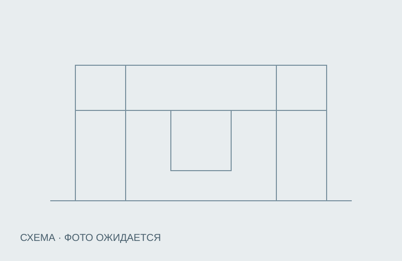
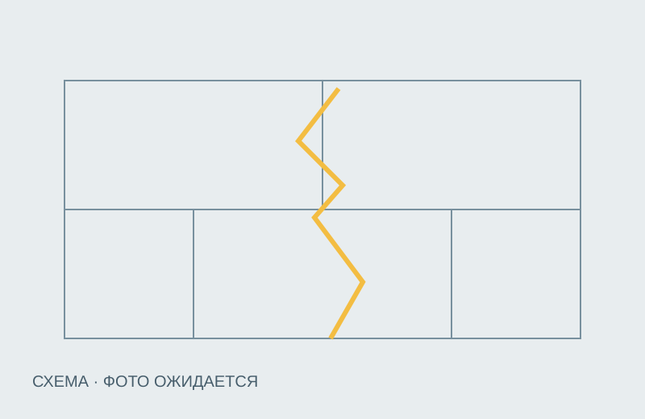
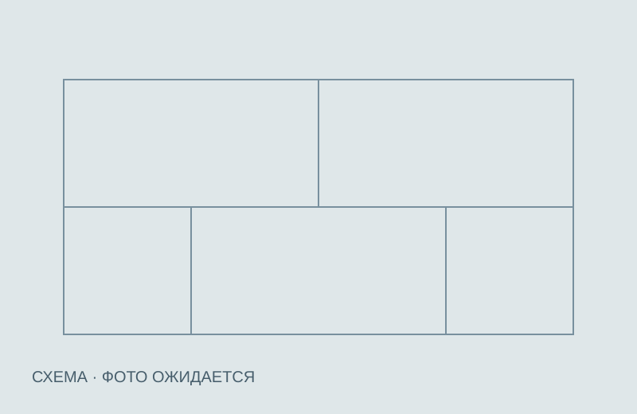

AVF Repair / инженерное восстановление
Металлические ограждения
Материалы по металлическим ограждениям; состав работ уточняется.
Отправить фото проблемыКейс в подготовке. Название и направление взяты из архива компании; фотографии, технические детали и результат ещё не подтверждены.

Исходное состояние
Нужны описание дефектов и фотографии до начала работ.
Поставленная задача
Материалы по металлическим ограждениям; состав работ уточняется. Формулировка задачи заказчика требует уточнения.
Техническое решение
Необходимо подтвердить конструкцию, материалы и выбранные методы.
Реализация
Необходимо уточнить, какие элементы ремонтировали или заменяли.
Результат
Нужны подтверждённое описание результата и фотографии после работ.
Сравнение до и после


Демонстрационный placeholder. Схемы показывают работу сравнения, а не результат реального ремонта. Ползунок поддерживает касание и клавиши со стрелками.
Связанные направления
Ремонт огражденийВернуться к проектамОбсудим задачу
Начнём
с фотографии
Покажите нам проблему. Специалист изучит фотографии и предложит дальнейшие действия.
Демонстрационный режим: данные и фотографии остаются в браузере, заявка не отправляется.
Мессенджер: контакт уточняется